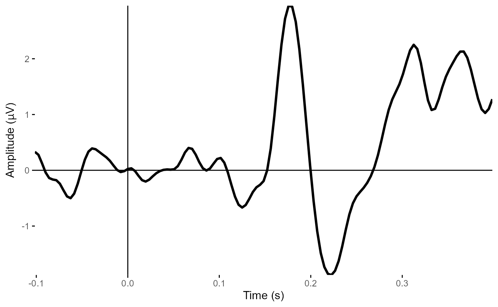

eegUtils is a package for performing basic EEG preprocessing and plotting of EEG data. Many of these functions are wrappers around existing R functions to make them behave in consistent ways and produce output that is more amenable to many of the subsequent steps in EEG analysis.
The package implements custom objects to contain EEG data and associated metadata. Some of its functions depend on data being stored in this format, but part of the philosophy of the package is that any object stored in the custom eeg_data and associated formats will always be convertible to a standard data.frame or tibble for subsequent use in whatever way the user desires. Plotting functions will typically work on both eeg_data objects and standard formats, while more complex processing functions will require an eeg_data or related custom object (such as eeg_stats).
Basic EEG processing
There is currently suport for loading raw data in the .BDF (typically BioSemi) and .CNT (32-bit; associated with Neuroscan) file formats using the import_raw() command. Loading data in these formats in results in an eeg_data object - a structure that contains the raw data and a variety of metadata.
library(eegUtils)
eeg_example <- import_raw("F:\\Dropbox\\EEGData\\RawEEGData\\BasicCat\\S2B1.bdf")
names(eeg_example)
#> [1] "signals" "srate" "events" "chan_info" "timings"
#> [6] "continuous" "reference"
eeg_example$srate
#> [1] 512The data itself is stored in the signals data frame within the object; the timing of events is stored in the events data frame, and timings for each sample are stored in the timings data frame. Times are stored in samples and seconds.
A common first step would be to rereference the data, which can be done using the reref_eeg() command. By default, if no electrodes are specified, the data will be referenced to a common average. The median rather than the mean can be used by specifiying robust == TRUE. Electrodes can also be excluded from the average reference calculation; they will nevertheless still be referenced to the same reference as the other channels.
eeg_example <- reref_eeg(eeg_example, ref_chans = "average")
eeg_example <- reref_eeg(eeg_example, ref_chans = "average", robust = TRUE)
eeg_example <- reref_eeg(eeg_example, ref_chans = "average",
exclude = c("EXG7", "EXG8"), robust = TRUE)EEGLAB can be loaded using the import_set() command. The command detects whether the data is epoched or not and, by default, arranges the data in the eeg_data format.
Filtering can be performed using the iir_filt() command. This use a Butterworth filter to perform low-, high-, or band-pass or band-stop filtering of user-specified frequencies. Filtering is run twice (once forwards, once in reverse) to achieve zero-phase. (FIR filtering is currently in development, but could be performed using the signal package).
eeg_example <- iir_filt(eeg_example, low_freq = .1, high_freq = 40, filter_order = 3) #specify a bandpass filter
#> Band-pass IIR filter from 0.1-40 HzData can be epoched around events/triggers using epoch_data(), which outputs an eeg_epochs object. A list of the event triggers found in the data can be retrieved using list_events(). In this case we’ll epoch around event code 201.
list_events(eeg_example)
#> event_type
#> 1 18
#> 2 123
#> 3 125
#> 4 201
#> 5 202
#> 6 50
#> 7 7
#> 8 51
#> 9 21
#> 10 12
#> 11 6
#> 12 14
#> 13 99
eeg_example <- epoch_data(eeg_example, events = 201, time_lim = c(-.3, .75))eeg_epochs can then be plotted using plot_butterfly() or plot_timecourse(). Both plot_butterfly() and plot_timecourse() average over epochs. plot_timecourse() will also average over electrodes - all electrodes if none are specified, or over any specified electrodes. Baseline correction can also be applied at this point if desired. Baseline correction can also be applied using rm_baseline(), or for plotting only using the baseline parameter in the plotting call..
plot_butterfly(eeg_example, time_lim = c(-.2, .5), legend = FALSE)
plot_butterfly(eeg_example, time_lim = c(-.2, .5), legend = FALSE, baseline = c(-.1, 0))
#> Joining, by = "electrode"
plot_timecourse(eeg_example, time_lim = c(-.2, .5),
baseline = c(-.1, 0), electrode = "A30") # Plot POz
#> Joining, by = c("epoch", "electrode")
plot_timecourse(eeg_example, time_lim = c(-.2, .5), baseline = c(-.1, 0), electrode = "B6") # Plot Fz
#> Joining, by = c("epoch", "electrode")
Standard channel locations can be added using the electrode_locations() command. Currently this only has locations for a limited number of electrodes (64 electrodes from the 10-20 system). Different built-in montages will be added, and can be specified using the montage parameter. In this case, the data was recorded using Biosemi with alpha-numeric channel labels (e.g. A1 rather than Fp1), which are built-in with biosemi64alpha. topoplot() can then be used to plot topographical representation of selected data. Note that it is not compulsory to use locations from electrode_locations(); if the data has x and y columns when it is a data frame, or added to chan_info element of the eeg_data/eeg_epochs object, then those will be used.
eeg_example <- electrode_locations(eeg_example, montage = "biosemi64alpha")
#> Electrodes not found: EXG1 EXG2 EXG3 EXG4 EXG5 EXG6 EXG7 EXG8
#>
topoplot(eeg_example, time_lim = c(.1, .2))
Note that one electrode (Fp1/A1) was malunctioning during the the recording. We can interpolate that using spherical spline interpolation (interp_elecs()).
eeg_example <- interp_elecs(eeg_example, bad_elecs = "A1")
topoplot(eeg_example, time_lim = c(.1, .2))